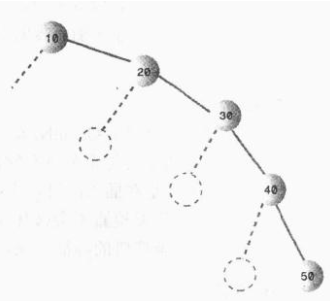
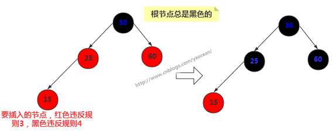
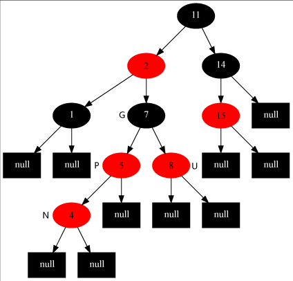
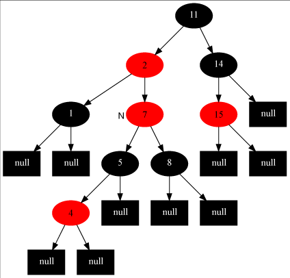
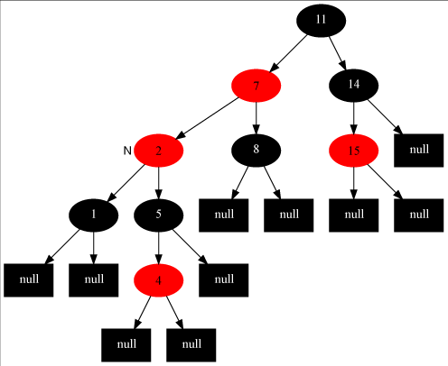

二叉搜索树对于某个节点而言，其左子树的节点关键值都小于该节点关键值，右子树的所有节点关键值都大于该节点关键值。二叉搜索树作为一种数据结构，其查找、插入和删除操作的时间复杂度都为O(logn),底数为2。但是我们说这个时间复杂度是在平衡的二叉搜索树上体现的，也就是如果插入的数据是随机的，则效率很高，但是如果插入的数据是有序的，比如从小到大的顺序【10,20,30,40,50】插入到二叉搜索树中：

从大到小就是全部在左边，这和链表没有任何区别了，这种情况下查找的时间复杂度为O(N)，而不是O(logN)。当然这是在最不平衡的条件下，实际情况下，二叉搜索树的效率应该在O(N)和O(logN)之间，这取决于树的不平衡程度。
那么为了能够以较快的时间O(logN)来搜索一棵树，我们需要保证树总是平衡的（或者大部分是平衡的），也就是说每个节点的左子树节点个数和右子树节点个数尽量相等。红-黑树的就是这样的一棵平衡树，对一个要插入的数据项（删除也是），插入例程要检查会不会破坏树的特征，如果破坏了，程序就会进行纠正，根据需要改变树的结构，从而保持树的平衡。
红-黑树的特征
有如下两个特征:
- 节点都有颜色；
- 在插入和删除的过程中，要遵循保持这些颜色的不同排列规则。
第一个很好理解，在红-黑树中，每个节点的颜色或者是黑色或者是红色的。当然也可以是任意别的两种颜色，这里的颜色用于标记，我们可以在节点类Node中增加一个boolean型变量isRed，以此来表示颜色的信息。
第二点，在插入或者删除一个节点时，必须要遵守的规则称为红-黑规则：
- 非红即黑 每个节点不是红色就是黑色的；
- 黑根 根节点总是黑色的；
- 红子为黑 如果节点是红色的，则它的子节点必须是黑色的（反之不一定）,(也就是从每个叶子到根的所有路径上不能有两个连续的红色节点)；
- 相同的黑色高度 从根节点到叶节点或空子节点的每条路径，必须包含相同数目的黑色节点。
从根节点到叶节点的路径上的黑色节点的数目称为黑色高度，规则 4 另一种表示就是从根到叶节点路径上的黑色高度必须相同。
注意：新插入的节点颜色总是红色的，这是因为插入一个红色节点比插入一个黑色节点违背红-黑规则的可能性更小，原因是插入黑色节点总会改变黑色高度（违背规则4），但是插入红色节点只有一半的机会会违背规则3（因为父节点是黑色的没事，父节点是红色的就违背规则3）。另外违背规则3比违背规则4要更容易修正。当插入一个新的节点时，可能会破坏这种平衡性，那么红-黑树是如何修正的呢？
红-黑树的自我修正
红-黑树主要通过三种方式对平衡进行修正，改变节点颜色、左旋和右旋。
①、改变节点颜色

新插入的节点为15，一般新插入颜色都为红色，那么我们发现直接插入会违反规则3，改为黑色却发现违反规则4。这时候我们将其父节点颜色改为黑色，父节点的兄弟节点颜色也改为黑色。通常其祖父节点50颜色会由黑色变为红色，但是由于50是根节点，所以我们这里不能改变根节点颜色。
②、右旋
首先要说明的是节点本身是不会旋转的，旋转改变的是节点之间的关系，选择一个节点作为旋转的顶端，如果做一次右旋，这个顶端节点会向下和向右移动到它右子节点的位置，它的左子节点会上移到它原来的位置。右旋的顶端节点必须要有左子节点。

③、左旋
左旋的顶端节点必须要有右子节点。

注意：我们改变颜色也是为了帮助我们判断何时执行什么旋转，而旋转是为了保证树的平衡。光改变节点颜色是不能起到任何作用的，旋转才是关键的操作，在新增节点或者删除节点之后，可能会破坏二叉树的平衡，那么何时执行旋转以及执行什么旋转，这是我们需要重点关注的。
左旋和右旋代码
①、节点类
节点类和二叉树的节点类差不多，只不过在其基础上增加了一个 boolean 类型的变量来表示节点的颜色。
|
|
②、左旋的具体实现
|
|
③、右旋的具体实现
|
|
插入操作
和二叉树的插入操作一样，都是得先找到插入的位置，然后再将节点插入。先看看插入的前段代码
|
|
这与二叉搜索树中实现的思路一样，这里不再赘述，主要看看方法里面最后一步insertFixUp(node)操作。因为插入后可能会导致树的不平衡，insertFixUp(node) 方法里主要是分情况讨论，分析何时变色，何时左旋，何时右旋。我们先从理论上分析具体的情况，然后再看insertFixUp(node) 的具体实现。
如果是第一次插入，由于原树为空，所以只会违反红-黑树的规则2，所以只要把根节点涂黑即可；如果插入节点的父节点是黑色的，那不会违背红-黑树的规则，什么也不需要做；但是遇到如下三种情况，我们就要开始变色和旋转了：
- 插入节点的父节点和其叔叔节点（祖父节点的另一个子节点）均为红色。
- 插入节点的父节点是红色的，叔叔节点是黑色的，且插入节点是其父节点的右子节点。
- 插入节点的父节点是红色的，叔叔节点是黑色的，且插入节点是其父节点的左子节点。
下面我们挨个分析这三种情况都需要如何操作，然后给出实现代码。
在下面的讨论中，使用N,P,G,U表示关联的节点。N(now)表示当前节点，P(parent)表示N的父节点，U(uncle)表示N的叔叔节点，G(grandfather)表示N的祖父节点，也就是P和U的父节点。
对于情况1：插入节点的父节点和其叔叔节点（祖父节点的另一个子节点）均为红色。此时，肯定存在祖父节点，但是不知道父节点是其左子节点还是右子节点，但是由于对称性，我们只要讨论出一边的情况，另一种情况自然也与之对应。这里考虑父节点是其祖父节点的左子节点的情况，如下左图所示：


对于这种情况，我们要做的操作有：将当前节点(4) 的父节点(5) 和叔叔节点(8) 涂黑，将祖父节点(7)涂红,变成了上有图所示的情况。再将当前节点指向其祖父节点，再次从新的当前节点开始算法（具体看下面的步骤）。这样上右图就变成情况2了。
对于情况2：插入节点的父节点是红色的，叔叔节点是黑色的，且插入节点是其父节点的右子节点。我们要做的操作有：将当前节点(7)的父节点(2)作为新的节点，以新的当前节点为支点做左旋操作。完成后如左下图所示，这样左下图就变成情况3了。


对于情况3：插入节点的父节点是红色，叔叔节点是黑色，且插入节点是其父节点的左子节点。我们要做的操作有：将当前节点的父节点(7)涂黑，将祖父节点(11)涂红，在祖父节点为支点做右旋操作。最后把根节点涂黑，整个红-黑树重新恢复了平衡，如右上图所示。至此，插入操作完成！
我们可以看出，如果是从情况1开始发生的，必然会走完情况2和3，也就是说这是一整个流程，当然咯，实际中可能不一定会从情况1发生，如果从情况2开始发生，那再走个情况3即可完成调整，如果直接只要调整情况3，那么前两种情况均不需要调整了。故变色和旋转之间的先后关系可以表示为：变色->左旋->右旋。
至此，我们完成了全部的插入操作。下面我们看看insertFixUp方法中的具体实现（可以结合上面的分析图，更加利与理解）
|
|
删除操作
上面探讨完了红-黑树的插入操作，接下来讨论删除，红-黑树的删除和二叉查找树的删除是一样的，只不过删除后多了个平衡的修复而已。我们先来回忆一下二叉搜索树的删除：
- 如果待删除的节点没有子节点，那么直接删除即可。
- 如果待删除的节点只有一个子节点，那么直接删掉，并用其子节点去顶替它。
- 如果待删除的节点有两个子节点，这种情况比较复杂：首先找出它的后继节点，然后处理“后继节点”和“被删除节点的父节点”之间的关系，最后处理“后继节点的子节点”和“被删除节点的子节点”之间的关系。每一步中也会有不同的情况。
实际上，删除过程太复杂了，很多情况下会采用在节点类中添加一个删除标记，并不是真正的删除节点。详细的删除我们这里不做讨论。
红黑树的效率
红黑树的查找、插入和删除时间复杂度都为O(log2N)，额外的开销是每个节点的存储空间都稍微增加了一点，因为一个存储红黑树节点的颜色变量。插入和删除的时间要增加一个常数因子，因为要进行旋转，平均一次插入大约需要一次旋转，因此插入的时间复杂度还是O(log2N),(时间复杂度的计算要省略常数)，但实际上比普通的二叉树是要慢的。
大多数应用中，查找的次数比插入和删除的次数多，所以应用红黑树取代普通的二叉搜索树总体上不会有太多的时间开销。而且红黑树的优点是对于有序数据的操作不会慢到O(N)的时间复杂度。